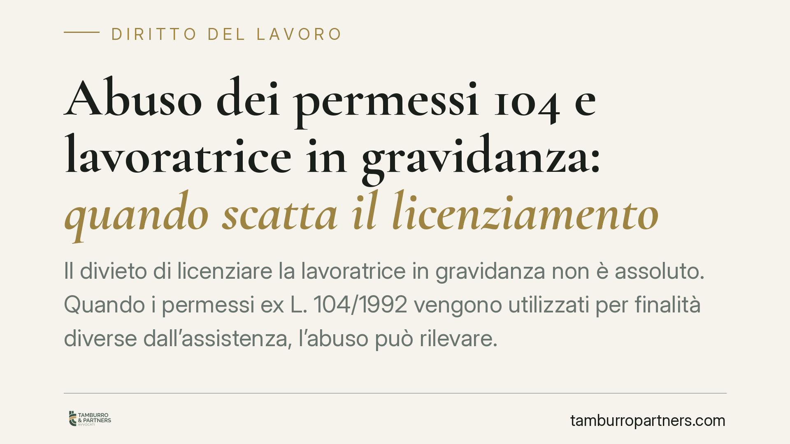

Abuso dei permessi 104 e lavoratrice in gravidanza: quando scatta il licenziamento
Il divieto di licenziare la lavoratrice in gravidanza non è assoluto. Quando i permessi ex L. 104/1992 vengono utilizzati per finalità diverse dall'assistenza, l'abuso può rilevare. La legge, però, consente il recesso solo in presenza di una colpa grave che integri giusta causa. Un equilibrio delicato tra tutela della maternità e repressione delle condotte scorrette, che merita chiarezza.

Avvertenza preliminare sulla fonte
La notizia di partenza richiama un'ordinanza della Corte di Cassazione identificata con un numero e un anno (2026) non verificabili e cronologicamente incoerenti rispetto a una pronuncia presentata come già esistente. Per correttezza professionale non attribuiamo a quella specifica decisione alcun principio di diritto. L'analisi che segue si fonda esclusivamente sul quadro normativo vigente e sugli orientamenti consolidati in materia. Prima di qualsiasi utilizzo processuale o difensivo, l'esistenza e gli estremi della pronuncia vanno verificati sulle banche dati ufficiali.
Il tema
Il caso tipo è noto: una lavoratrice fruisce dei permessi previsti dall'art. 33 della L. 104/1992 per assistere un familiare con disabilità grave, ma il datore sospetta che quelle ore siano impiegate per scopi personali, estranei all'assistenza. La circostanza che la lavoratrice sia in stato di gravidanza complica la valutazione, perché su di lei opera una tutela rafforzata contro il licenziamento.
La domanda giuridica è quindi duplice. L'uso distorto dei permessi configura un illecito disciplinare? E, se sì, può giustificare il recesso nonostante il divieto di licenziamento della gestante?
Inquadramento normativo
L'art. 33 della L. 104/1992 riconosce permessi retribuiti (di norma tre giorni al mese) per l'assistenza al familiare con handicap in situazione di gravità. Il permesso ha una finalità vincolata: l'assistenza. La giurisprudenza è costante nel ritenere che l'utilizzo per fini diversi integra un abuso del diritto e, a seconda della gravità, può costituire illecito disciplinare, oltre a possibili profili di indebita percezione a carico del datore e dell'INPS.
Sul licenziamento della lavoratrice madre interviene l'art. 54 del D.Lgs. 151/2001, che vieta il recesso dall'inizio della gravidanza fino al compimento di un anno di età del bambino. Il divieto non è però incondizionato. Il comma 3, lettera a), ammette il licenziamento per "colpa grave da parte della lavoratrice, costituente giusta causa per la risoluzione del rapporto".
Qui sta il punto spesso frainteso. La formula non introduce una soglia disciplinare "ulteriore" inventata dai giudici: è il testo stesso della legge a selezionare, tra tutte le condotte astrattamente rilevanti, soltanto quelle qualificabili come colpa grave idonea a integrare la giusta causa dell'art. 2119 c.c. Le deroghe al divieto sono tassative e di stretta interpretazione. Di conseguenza, non ogni mancanza disciplinare giustifica il recesso della gestante: serve una condotta di gravità tale da rendere intollerabile la prosecuzione del rapporto.
Implicazioni pratiche
Per il datore di lavoro il margine è stretto. Un abuso dei permessi può certamente rilevare, ma non basta allegare un uso improprio: occorre dimostrare, con prova rigorosa, che l'assistenza non è stata prestata e che la condotta raggiunge la soglia della colpa grave. Un singolo episodio di contestata diligenza, o un utilizzo solo parzialmente difforme, difficilmente integra la giusta causa richiesta per superare il divieto.
Per la lavoratrice, lo stato di gravidanza non crea immunità: non esiste alcuna franchigia che renda la condotta irrilevante. La tutela rafforzata non protegge l'abuso; protegge la maternità da licenziamenti pretestuosi. L'uso distorto reiterato e provato del permesso resta sanzionabile.
Quanto alle condizioni psicofisiche legate alla gravidanza, possono rilevare sul piano della valutazione complessiva della condotta e dell'elemento soggettivo, ma solo come lettura interpretativa da verificare caso per caso. Non costituiscono un'esimente automatica.
Cosa fare in concreto
- Documentare con rigore. Prima di qualsiasi contestazione, raccogliere elementi oggettivi e proporzionati che dimostrino l'uso non assistenziale dei permessi, nel rispetto dei limiti su controlli e privacy.
- Valutare la soglia di gravità. Verificare se la condotta integra una colpa grave idonea a costituire giusta causa ex art. 2119 c.c., non un mero inadempimento.
- Rispettare la procedura disciplinare. Formulare una contestazione specifica e tempestiva, garantendo il diritto di difesa previsto dall'art. 7 dello Statuto dei lavoratori.
- Considerare la tutela ex art. 54. Ricordare che il licenziamento della gestante fuori dai casi tassativi è nullo, con conseguenze reintegratorie.
- Verificare le fonti citate. Non fondare decisioni su pronunce di cui non siano certi numero, anno ed estremi.
Un principio di bilanciamento
Il quadro normativo persegue un equilibrio: reprimere l'abuso dei permessi senza indebolire la protezione della maternità. Il risultato non è un'area di impunità per la lavoratrice, né una scorciatoia per il datore. È una soglia alta di prova e di gravità, coerente con la natura eccezionale delle deroghe al divieto di licenziamento.
---
*Contributo informativo a cura di Tamburro & Partners - Avv. Giuseppe Tamburro. Non costituisce parere legale.*
Ogni storia di lavoro ha i suoi tempi.
Se gestisci HR e vuoi un confronto su contenzioso, ispezioni o licenziamenti, scrivi allo studio. Ti rispondiamo entro un giorno lavorativo.